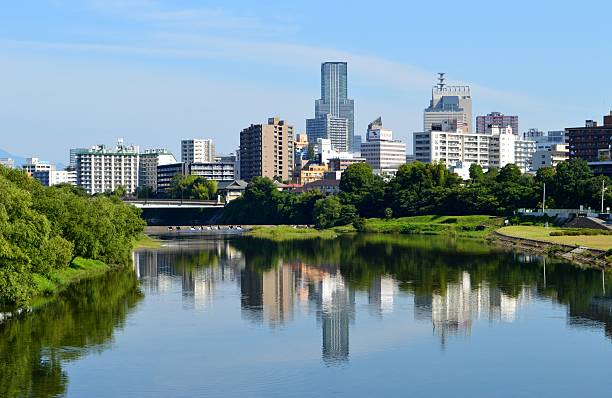

Sendai este un oraș cunoscut pentru tradiția sa samurai și pentru muzeele sale dedicate tsunami-ului.
Top 10 Atracții din Sendai:
- Castelul Sendai
- Parcul Jozenji-dori
- Templul Osaki Hachiman
- Strada Clasică a Tradițiilor Sendai
- Statuia Date Masamune
- Muzeul de Artizanat Sendai
- Muzeul de Istorie al Regiunii Tohoku
- Plaja Ishinomaki
- Turnul Tsunami
- Grădina Rinno-ji